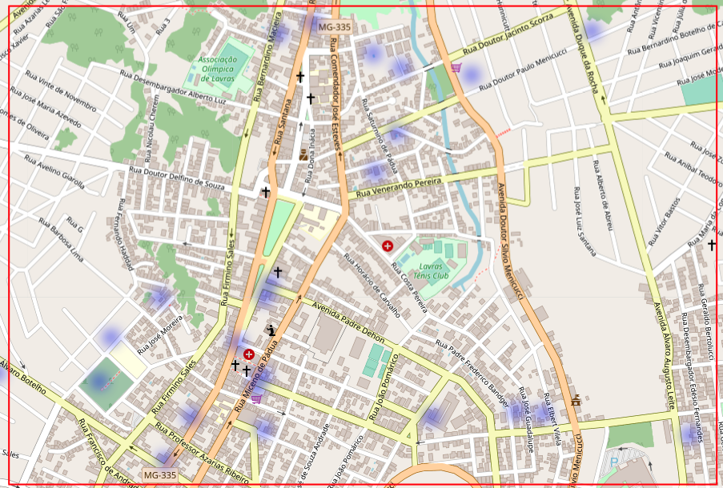

Explorando o Potencial da Modelagem Baseada em Agentes
Quem sou eu?

Eric Araújo
- Professor Associado da Calvin University (USA)
- Coordenador BILbo (Behavioral Informatics Laboratory)
- PhD pela Vrije Universiteit Amsterdam
Solucionando Problemas

“Não podemos resolver problemas usando o mesmo tipo de pensamento que usamos quando os criamos.”
– Albert Einstein


2.1 Trabalhos: Segurança pública

Raquel Rosés, Cristina Kadar, Nick Malleson, A data-driven agent-based simulation to predict crime patterns in an urban environment, Computers, Environment and Urban Systems, Volume 89, 2021, ISSN 0198-9715.
2.1 Trabalhos: Forças Armadas

Yun, Woo-Seop, Moon, Il-Chul and Lee, Tae-Eog (2015). Agent-Based Simulation of Time to Decide: Military Commands and Time Delays. Journal of Artificial Societies and Social Simulation 18 (4) 10. doi: 10.18564/jasss.2871
2.2 Modelos Simples vs Análises Complexas (Agentes Adaptativos)

O caso das bicicletas na Holanda
Regra Única vs Agentes que Aprendem (Adaptam)
4.1 Padrões de roubos de rua na cidade de Lavras (MG)
